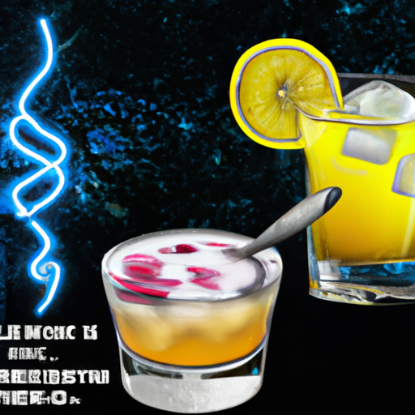

Pan Galactic Gargle Blaster

Description:
This unique cocktail is a twist on the classic Penicillin cocktail, with an added intergalactic flair that Rick Sanchez himself would love..
Ingredients:
- 2 oz of blended Scotch whisky
- 3/4 oz of fresh lemon juice
- 3/4 oz of honey syrup (1:1 ratio of honey and water)
- 1/4 oz of ginger syrup (1:1 ratio of ginger juice and sugar)
- 1/4 oz of Blue Curaçao liqueur
- 2 dashes of absinthe
Steps:
- To make the cocktail, combine all ingredients in a shaker with ice and shake vigorously.
- Strain the mixture over fresh ice in a rocks glass.
- Garnish with a lemon wheel and a sprig of fresh thyme.
- Allow four litres of Fallian marsh gas to bubble through it, in memory of all those happy hikers who have died of pleasure in the Marshes of Fallia.
- This bold and complex cocktail is the perfect remedy for any space adventure or existential crisis like Rick and Morty often face.
Back